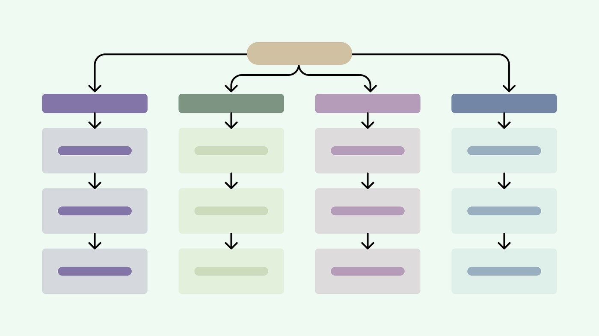
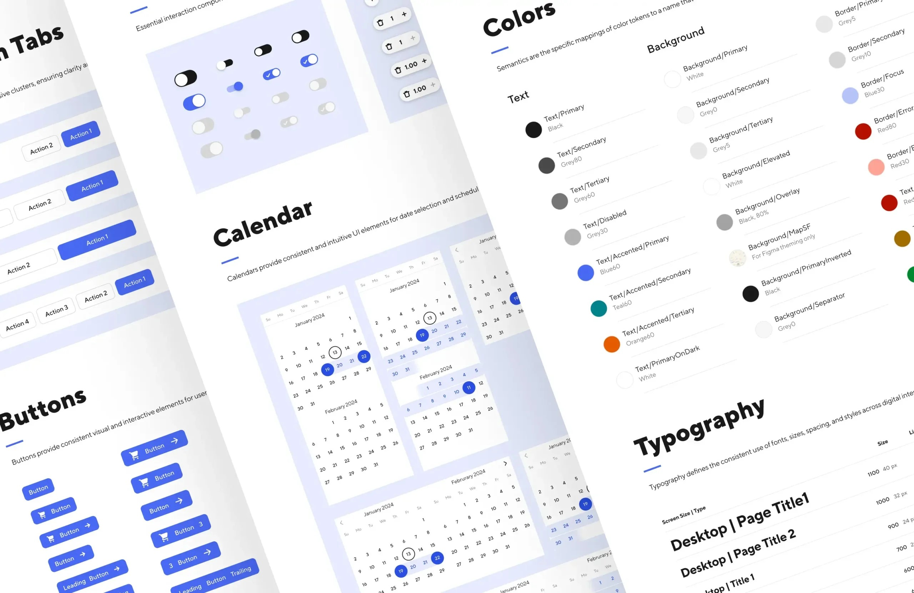
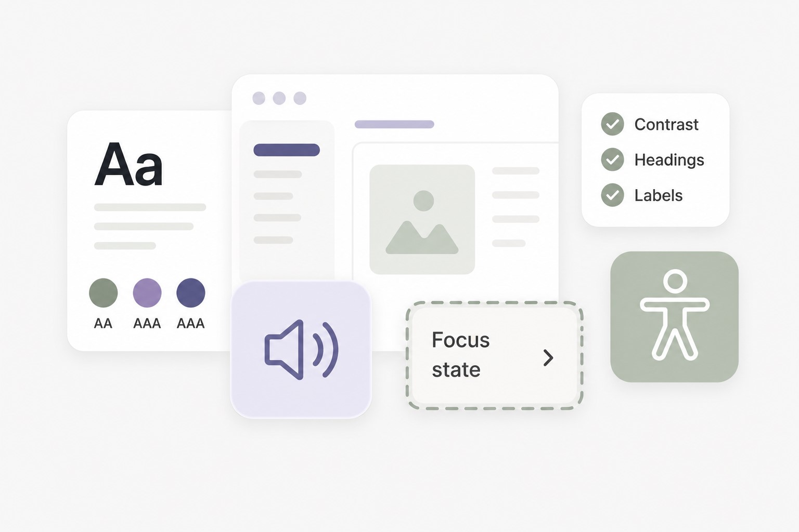

Reorganising a Complex Educational Platform
Analysing 600+ user sessions, 31 teacher interviews, information architecture, card sorting, and platform ecosystems to redesign how educational resources were organised and discovered.
UX/UI Designer with +4 years of experience designing complex digital products, B2B platforms, and scalable systems. I combine research, accessibility, and product thinking to create solutions that work for both users and businesses.
I approach design through curiosity, systems thinking, and structured problem-solving, connecting user needs, business goals, and technical constraints into meaningful solutions.

Analysing 600+ user sessions, 31 teacher interviews, information architecture, card sorting, and platform ecosystems to redesign how educational resources were organised and discovered.

Creating a scalable design foundation for Oxford Premium, supporting a rebranding initiative, visual alignment with HUB, redesigned interaction flows, and progressive implementation with development.

Auditing platforms, testing with assistive technologies, updating design system foundations, and creating documentation to make accessibility easier to apply across teams.
A personal reflection on painting as a space for calm, exploration, cultural memory, vulnerability, and creative presence.
A UX analysis of hormonal health apps, exploring how the category is shifting from simple cycle tracking to interpretive systems.
A visual case study showing how an immersive concept evolved into a digital experience through accessibility, prototyping, visual language, and design system foundations.